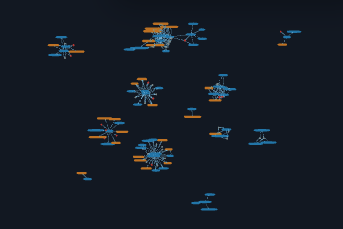

Jorge Medina
Research & Systems
Designing AI systems for scientific discovery. From language models to simulation, making machines better at reasoning about the world.
Selected Work
01 — ARCHITECTURES
02 — RL ENVIRONMENTS
03 — SIMULATIONS
04 — REASONING GRAPHS
AgentGroupChat
A shared chat substrate for humans and LLM agents with direct chats, group rooms, granular permissions, and real-time websocket synchronization.
Personal Projects / RL
RL Environments
Scientific simulators designed so LLMs learn via verifiable reward signals grounded in physics.
3 envs
↓
RL Environments
Scientific simulators designed so LLMs learn via verifiable reward signals grounded in physics.
GRPO environment for crystal structure relaxation using CHGNet as a force-field surrogate. Reward is formation energy convergence.
Agent proposes molecular geometries or substitutions; rewards grounded in DFT energy calculations via PySCF.
MD RL environment wrapping OpenMM; agent iterates simulation parameters, rewarded by thermodynamic stability and convergence.
Drug Discovery Pipeline
Fully self-contained environments for LLM agents to run protein-ligand simulations via Bayesian optimization — verifiable enough to train with GRPO.
Dependency Graphs
Normalizing tool schemas into executable dependency graphs, enabling agents to reason about complex task sequences instead of a flat tool list.

Selected Publications
Advancing the intersection of Chemistry and Intelligence
Journal of Cheminformatics
Bloom Filters for Molecules: Compact Representations for Screening
Efficient molecular fingerprints designed for massive-scale virtual screening in high-throughput drug discovery pipelines.
PaperNature Machine Intelligence
MDCrow: Automating Molecular Dynamics Workflows with LLMs
A specialized agentic framework capable of executing complex protein analysis using 40+ expert-designed tools.
PaperArXiv
Active Learning with Constraints in Symbolic Regression
Discovery of interpretable physical laws through constraint-aware active learning cycles and symbolic optimization.
ChemRxiv
Bayesian Optimization with LLMs for Materials Search
Utilizing LLM-guided acquisition functions to efficiently navigate high-dimensional material property spaces.
PaperLet's synthesize something new.
Open to collaborations at the intersection of agentic workflows and molecular modeling.
GitHub — Jgmedina95